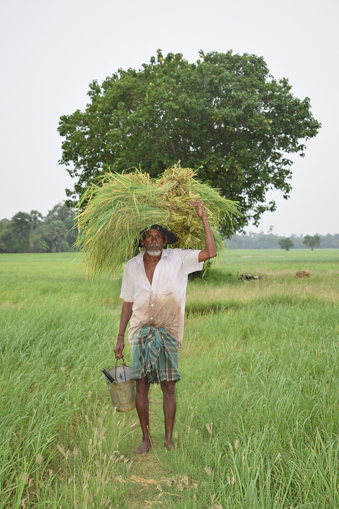
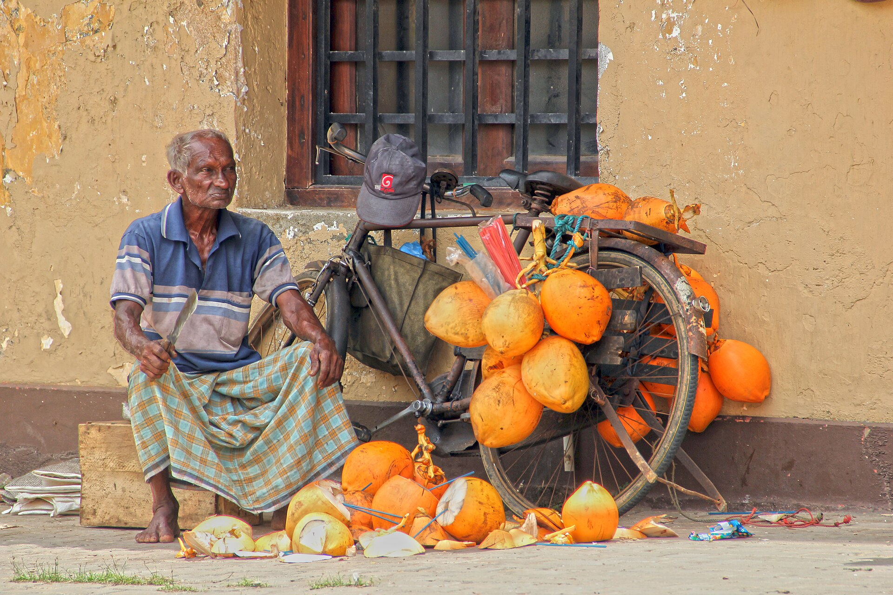
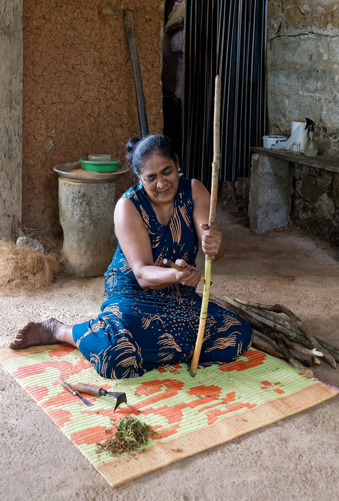
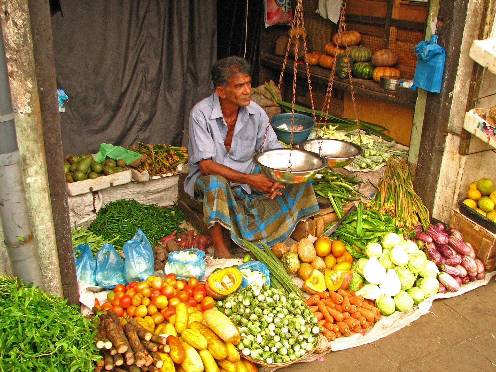
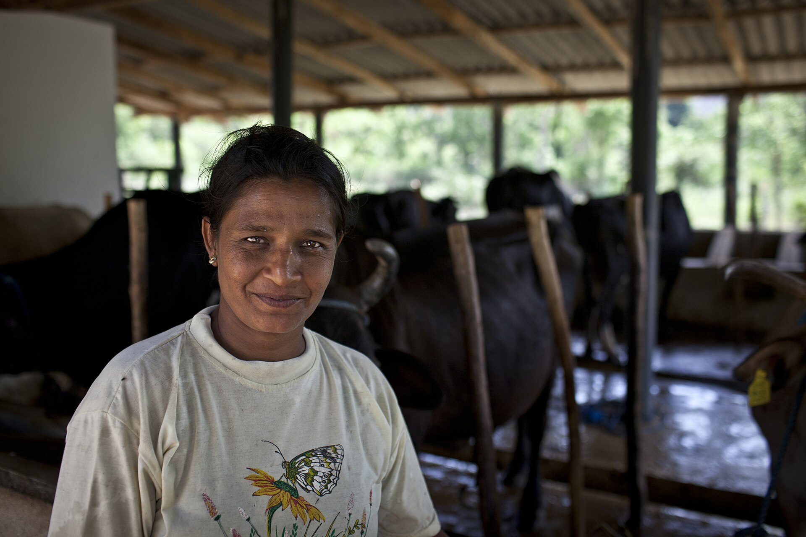
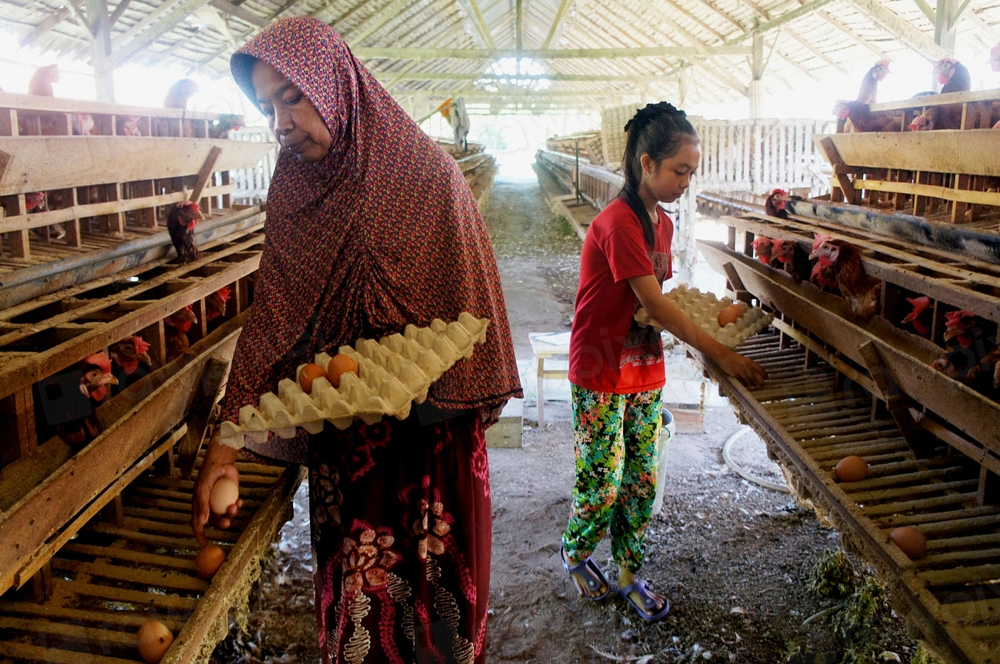
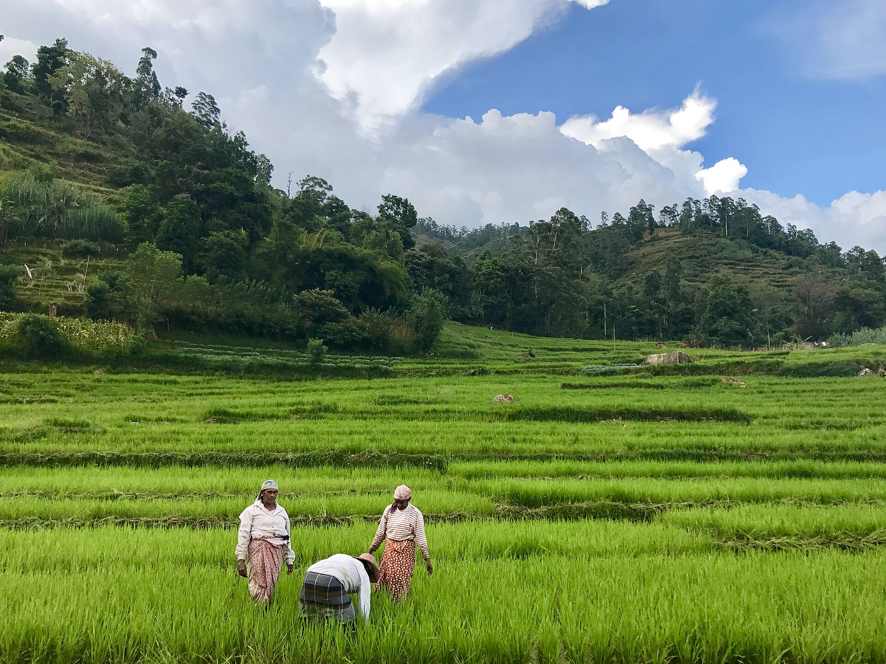
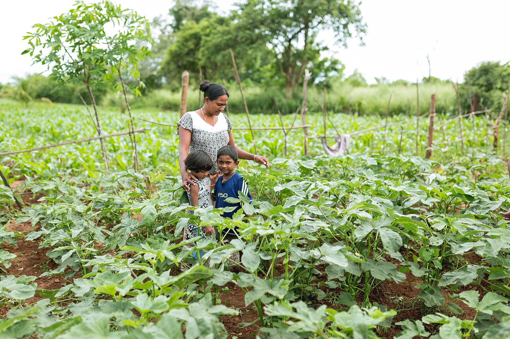

of Sri Lankan workers are in agriculture, yet it is only 8.4% of GDP.
DCS Labour Force Survey Q3 2025; DCS national accounts 2025Validation-first agri-investment platform · Sri Lanka
Trust first.
Capital second.
පළමුව විශ්වාසය. දෙවනුව ප්රාග්ධනය.முதலில் நம்பிக்கை. பின்னர் மூலதனம்.
Agri Lanka Trust reads an agri-SME's real documents, scores the business on five dimensions, and shows investors only the businesses that pass. Farmers prove it once. Investors stop spending weeks checking it.
23.4%
>20%
of GDP: the size of Sri Lanka's SME finance gap.
MSME Finance Gap Database, via Daily FT 202620 hrs
median time an angel investor spends checking one deal.
Wiltbank and Boeker, Kauffman FoundationUS$814M
of farm damage from Cyclone Ditwah: risk that investors now ask about.
World Bank rapid damage estimate, Dec 2025The trust gap
Good farm businesses stay unfunded because nobody can check them cheaply.
01
SMEs cannot prove it.
Registration papers in a drawer, sales in a notebook, receipts as WhatsApp photos.
02
Investors cannot verify it.
Each file means weeks of calls, visits and back-and-forth before any money moves.
03
So capital stays idle.
Promising businesses stay invisible, or turn to moneylenders at 40% and more.
"Sri Lanka's capital gap is structural, not monetary."UNDP Sri Lanka Resident Representative, Daily FT, 2026

The flip
Today SMEs pitch first and get checked later. We verify first.
Today
SME pitches directly
Investor digs through PDFs
Weeks of manual checks
Doubt. Deal lost.
With us
SME uploads proof from a phone
OCR and ML read and sort it
Five-dimension score + gates
Investor meets a verified SME
Trust first. Capital second.
How it works
From a folder of papers to one score an investor can trust
Seven steps, the first five automated. A person reviews anything the machine is unsure about.
Upload the proof
Registration, TIN, sales books, certificates, bank statements. Photos from a phone are fine. Help in Sinhala, Tamil and English on WhatsApp.
OCR reads the text
Optical character recognition turns each page into searchable text, including Sinhala and Tamil where the engine supports it.
ML sorts each document
A classifier recognises what each file is and how reliable it looks. Low-confidence files go to a human reviewer.
Five-dimension assessment
Operations, finance, compliance, market presence, and risk and sustainability, each scored from the evidence behind it.
Score + threshold gates
A readiness score out of 100. Critical areas have a minimum, so a high total cannot hide a red flag.
Investor discovery, by consent
Investors filter and compare verified SMEs. Documents stay locked until the SME says yes. Funding moves through a licensed partner bank.
Try the threshold gate
Move the sliders. Watch who gets seen.
This is the rule that makes the score trustworthy. A business with a strong total but weak compliance stays hidden until it fixes the gap.
Operational existence and capacity
Is it real and able to produce? Site photos, utility bills, equipment, staff records.Financial readiness
Do the numbers agree? Sales books, bank statements, invoices.Documentation and compliance
Registered, taxed and certified? BR, TIN, SL-GAP, licences.Market presence and transparency
Real buyers? Contracts, purchase orders, online presence.Risk and sustainability
Can it survive a shock? Insurance, irrigation, buyer spread, flood history.82/ 100
Readiness score
Visible to investors
Who we serve first
Six agri sectors in the Western, North Western and Central provinces
Year 1 target: 100 SMEs onboarded with two field officers. The North Central, Uva and Southern provinces follow in Year 2.

Coconut productsExports up 42.7% in 2025 to US$1.23 bn

SpicesCinnamon, pepper and cloves from Matale and the south

Fruit and vegetablesSL-GAP now compulsory for EU exports

DairySmall herds, steady milk income

PoultryEggs and broilers for local markets

Rice and food processingPaddy, mills, dryers and packing units

For agri-SME owners
A clear score, and a clear list of what to fix
- One upload, many investors. Your verified profile replaces the folder you carry to every bank.
- Know exactly what is missing. "Needs fix" tells you which document to add and why it matters.
- Help in your language. Sinhala, Tamil and English support by phone and WhatsApp, plus field officer visits.
- Built for seasonal income. Pause your plan for up to two months instead of cancelling.
- Your documents stay yours. Investors see your score; they see files only when you approve.
What to have ready
- Business registration (BR)
- Tax file number (TIN)
- 12 months of sales records
- 6 months of bank statements
- Certificates (SL-GAP, SLS, licences)
- Buyer contracts or orders
- Land deed or lease
- Insurance details
For investors and lenders
A pipeline of agri-SMEs that have already been checked
- Minutes, not weeks. Filter by sector, district and minimum score; compare SMEs side by side.
- Explainable, not a black box. Every dimension score links to the evidence behind it.
- Gated quality. You only see SMEs that pass the minimums on finance and compliance.
- A monthly list of newly validated SMEs that match your preferences.
- Clean money flows. Funding moves through a licensed partner bank. We never lend or hold your money.
For angel, impact and diaspora investors, cooperative rural banks, microfinance and licensed lenders using NCGI guarantees.
Pricing
Simple monthly plans on both sides
Prices in Sri Lankan rupees. The first month is free for investors; SMEs earn a free month for each paying SME they refer.
Agri-SME
SME Access
2,500 LKR / month
- Verified profile and score
- Document checklist and fixes
- WhatsApp support
Agri-SME
Premium SME
6,000 LKR / month
- Everything in Access
- Field officer visit
- Priority listing and readiness report
Investor
Investor Access
5,000 LKR / month
- Discover and filter verified SMEs
- Compare and shortlist
- Monthly new-SME list
Investor
Premium Investor
8,500 LKR / month
- Everything in Access
- Analytics and evidence packs
- Early access to new SMEs
SME pays15%a year on funding arranged
Investor earns12%a year
Agri Lanka Trust keeps3%success fee
Deals from LKR 100,000 to 10 million. Money moves through a licensed partner bank's account, never ours, as the Microfinance and Credit Regulatory Authority Act No. 9 of 2026 requires.
Why now
Lenders are moving to evidence. We produce it.
Rs 14 bn+
of collateral-free SME loans backed by NCGI guarantees since 2025. Cash-flow lending needs verified evidence.
NCGI via Daily FT, Jul 2026May 2026
SL-GAP certification became compulsory for fresh fruit and vegetable exports to the EU.
Daily FT, 28 May 20261 Jan 2027
Key parts of the Personal Data Protection Act take effect. We are built privacy-first.
Gazette 2498/16, 22 Jul 2026US$166M
from IFC in January 2026 for SME lending, including agri-SMEs, through three Sri Lankan banks.
IFC press release, Jan 2026Roadmap
From pilot to island-wide
Months 1-3
Register the company, finish the investor interface, publish the data-protection policy.
Months 4-8
Pilot with agricultural cooperatives; onboard the first SMEs with field officers.
Month 12
100 SMEs onboarded across three provinces.
Month 18
Three investor networks or financial institutions signed.
Year 3
New SME sectors; North and East; per-report fees for banks.
The founders
Four founders, four clear roles, equal shares
MB
CEO · Group leader
R.J.M.P.M. Bandara
Strategy, investor relations, partnerships and governance.
DS
CTO
D.I. Sayuranga
Platform, OCR and machine learning, database and security.
LN
COO
L.N.A.T.A. Nissanka
Validation rules, compliance, operations and finance.
MK
CMO
M.N. Kannangara
Market research, SME acquisition and investor networks.
Questions
What people ask us
Is Agri Lanka Trust a lender?
No. We verify businesses and connect them with investors. Any funding moves through a licensed partner bank. We earn subscriptions and a 3% success fee on funding arranged through the platform.
Is the readiness score a credit rating?
No. It is a readiness score built from the documents a business provides, with every point linked to its evidence. It is not a guarantee and not a credit rating; investors still make their own decisions.
What if a document is fake?
We cross-check documents against each other, check issuers where possible, send low-confidence files to a human reviewer and, for larger deals, visit the site. Suspicious files are flagged and the account can be restricted.
Who can see my documents?
Only our verification team. Investors see your score and summary; they see files only after you approve their request. Data is encrypted and handled under the Personal Data Protection Act No. 9 of 2022.
My papers are in Sinhala or Tamil. Is that a problem?
No. Upload them as they are. Where automatic reading is weaker for a script, a reviewer who reads the language checks it.
What does it cost to start?
SMEs start at LKR 2,500 a month and can pause for up to two months in the off-season. Investors start at LKR 5,000 a month, with the first month free.
Join the pilot
Tell us who you are. A field officer or our investor desk will call you.
Pilot districts: Kurunegala, Matale, Anuradhapura, Badulla, Hambantota and Colombo.
Phone and WhatsApp+94 76 219 4432
Emailinfo@agrilankatrust.lk
OfficeNo. 45, Greenfield Mawatha, Colombo 05